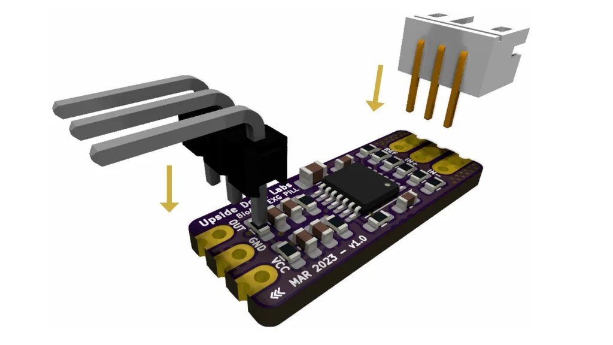
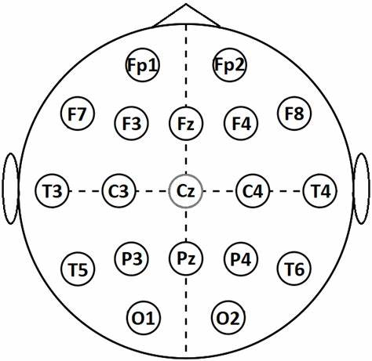

Instrução
HARDWARE:
- 1 x Pílula BioAmp EXG (com conector JST PH 2.0 e um pino header)
- 1 x Cabo BioAmp
- 3 x Eletrodos de gel
- 3 x Cabos jumper
- 1 x Arduino Uno / Maker Uno com cabo USB (Você também pode usar qualquer outra placa microcontroladora com ADC)
- 1 x Lenço umedecido
SOFTWARE:
- Arduino IDE
- BrainSync (para monitoramento cognitivo em ambientes educacionais)
Passo 1: Montagem
Pílula BioAmp EXG separadamente, será necessário montá-la para este projeto, soldando os pinos header e o conector JST PH 2.0 conforme o diagrama.
Passo 2: Preparação da Pele
Limpe a superfície da pele onde os eletrodos serão colocados utilizando um lenço umedecido. Esfregue bem a área para remover células mortas e qualquer sujeira presente na pele. Certifique-se de que a área esteja limpa e seca antes de prosseguir com a colocação dos eletrodos.
Passo 3: Conectando o Cabo do Eletrodo
Conecte o Cabo BioAmp à Pílula BioAmp EXG. Temos diferentes variantes do Cabo BioAmp, então não se baseie na codificação das cores, foque nas marcações REF, IN+ e IN- na Pílula BioAmp EXG.
Passo 4: Posicionamento dos Eletrodos
Antes de avançar com este projeto, entenda como colocar os eletrodos. Para registrar EEG da parte do córtex pré-frontal do cérebro, você deve colocar os eletrodos na testa, especificamente nas posições Fp1 e Fp2 (consulte o sistema internacional 10-20 para a gravação de EEG).
Passo 5: Conexões
Conecte a BioAmp EXG Pill ao Arduino Uno usando os cabos jumper conforme indicado abaixo:
- VCC para 5V
- GND para GND
- OUT para A0
Nota: TENHA MUITO CUIDADO e siga o diagrama acima ao fazer as conexões entre a BioAmp EXG Pill e o Arduino Uno, especialmente GND e VCC, pois isso pode danificar o sensor.
Passo 6: Baixar o Arduino IDE e Configurá-lo
Baixe o Arduino IDE no site oficial:
https://www.arduino.cc/en/software
Após o download, conecte o Arduino Uno ao seu computador utilizando o cabo USB (Tipo A para Tipo B). Certifique-se de que o Arduino está funcionando corretamente.
Nota: Para obter os melhores resultados de aquisição de sinal, evite conectar o laptop ao carregador e mantenha-se a pelo menos 5 metros de distância de aparelhos elétricos como ventiladores ou aparelhos de ar-condicionado.
Passo 7: Configurar o BrainSync com o Arduino
Com o Arduino Uno já conectado e configurado, utilize o software BrainSync para monitorar os sinais EEG captados pela Pílula BioAmp EXG. O código necessário para o Arduino e a integração com o BrainSync estão disponíveis juntos no projeto, simplificando a configuração e o funcionamento do sistema.
O Arduino será responsável por processar e transmitir os dados captados pela Pílula BioAmp EXG, enquanto o BrainSync realizará a análise cognitiva em tempo real.
Acesse aqui para obter os códigos e seguir os passos detalhados para integração.